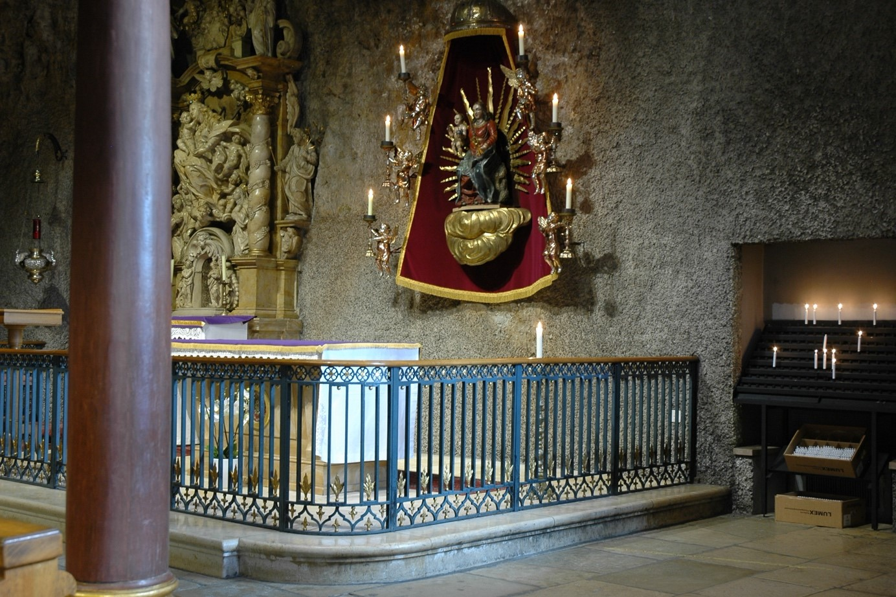
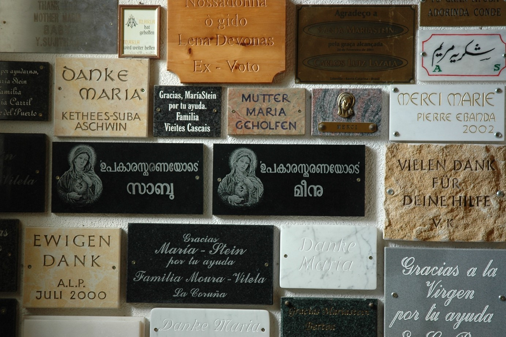

Mariastein ist ein Wallfahrtsort und ein Benediktinerkloster in der Nähe der Stadt Basel und grenzt unmittelbar ans Elsass. Es liegt auf einem Felsenrand. Politisch gehört der Ort zur Gemeinde Metzerlen-Mariastein. Nach der Legende, 1442 erwähnt, soll dort ein Kind über den Felsen hinabgefallen und von der Gottesmutter Maria gerettet worden sein. Erstmals ist 1434 von einer Kapelle «im Stein» die Rede. In einer natürlichen Höhlenkapelle stand dort wohl schon seit dem Ende des 14. Jahrhunderts ein Marienbild, das von der Bevölkerung aufgesucht wurde. 1466 beschädigte ein Brand die heilige Stätte und das Bruderhaus eines Einsiedlers.
Blick in die Gnadenkapelle von Mariastein mit dem sogenannten Gnadenbild der Gottesmutter Maria. (Bild: Pater Notker Strässle).
Glaubensver(w)irrungen und ein neues Fallwunder
Nach dem Brand übergab der Basler Bischof 1470 den Ort den Augustiner-Eremiten von Basel zur Wiederbelebung und Betreuung. Sie bauten über der Felsenkapelle eine oberirdische Kapelle, die Reichensteinische- oder Siebenschmerzenskapelle. 1515 erwarb die Stadt Solothurn die Herrschaft Rotberg und damit auch diese Gebetsstätte. Der Rat von Solothurn entzog die Pfründe den Augustinern und übergab sie einem Weltpriester. Infolge der Reformationswirren wurde die Stätte verwüstet. Doch stellte Solothurn, das nach längerem Zaudern beim alten Glauben verblieb, 1534 den humanistisch gebildeten Priester Jakob Augsburger (ca. 1495–1561) an. Dieser hing eine Zeitlang der Reformation an und nahm auch an der Berner Disputation teil. Er erneuerte den verwüsteten Wallfahrtsort. 1541 stürzte der Junker Hans Thüring Reich von Reichenstein (gest. 1562) aus Unvorsicht über den Felsen und kam lebend davon. Seine Familie sah das als neues Fallwunder an und bezeugte es mit einem Gemälde, das den Vorfall dokumentiert und so auch den Ort gegenüber dem benachbarten protestantischen Baslergebiet neu bekannt machte.
Seelsorge, Wallfahrt und Klosterschule
1636 übernahmen die Benediktiner von Beinwil im Hinblick auf eine geplante Verlegung ihres Klosters nach Mariastein die Seelsorge und die Betreuung der Wallfahrt. Das Kloster Beinwil wurde um 1100 durch lokale Adelige nach der Hirsauer Reformbewegung, die sich an zentrale Elemente der Reform von Cluny orientierte, gegründet. Hineingezogen in die lokalen politischen Auseinandersetzungen der Gegend und auch wegen innerer Mängel, verarmte das Kloster Beinwil und starb 1554 aus. Der Rat von Solothurn, in dessen Oberhoheit die Grafschaft Thierstein und damit auch das Kloster seit 1519 unterstand, erneuerte 1589 mit Hilfe von Einsiedeln und Rheinau das benediktinische Leben. 1633 wurde wieder ein Abt gewählt, der die schon vorher geplante Verlegung des Klosters an den Wallfahrtsort Mariastein an die Hand nahm. 1636 kamen die ersten Benediktiner dorthin und trafen die Vorbereitungen. Die rechtliche Verlegung erfolgte 1648. Die Mönche bauten dort ihr neues Kloster auf, dazu eine grosse Klosterkirche in spätgotischem Stil. Wallfahrt und benediktinisches Leben ergänzten sich gegenseitig. Die Wallfahrt blühte auf und eine Klosterschule sorgte für die Zukunft der Gemeinschaft. Die Französische Revolution brachte 1798 dem Kloster und der Wallfahrt ein abruptes Ende. Ab 1802 konnten die vertriebenen Mönche allmählich wieder in ihr verwüstetes Kloster zurückkehren.
Vertreibung und Asyl
Doch es war auch ein neuer Zeitgeist angebrochen, der Wallfahrt und Klosterleben in Frage stellte. Das Kloster wurde ab 1831 vom Staat kontrolliert, zusätzlich extra besteuert, die Aufnahme von Kandidaten beschränkt. Das Ziel des schwelenden Kulturkampfes war die Aufhebung des Klosters, die der Solothurner Kantonsrat 1874 beschloss und durch eine Volksabstimmung bekräftigt wurde. Das Klostervermögen ging an den Staat. Die Mönche wurden 1875 aus dem Kloster ausgewiesen, doch durften einige Mönche im Auftrag des Staates die Wallfahrt weiterhin betreuen; wohl eine weltweite Sonderheit, dass ein liberaler Staat eine Marienwallfahrt ‹betrieb›! Die Mönche wollten als Gemeinschaft zusammenbleiben; so nahmen sie Wohnsitz im französischen Delle (Arrondissement de Belfort), dort 1901 wieder enteignet, zogen sie nach Österreich, zuerst 1902 nach Dürrnberg, dann 1906 nach Bregenz, wo sie das St. Gallus-Stift begründeten. Doch weiterhin betreuten immer einige Mönche in Mariastein – Klosteranlage und Kirche waren nun in Staatsbesitz – die Wallfahrt, die wieder aufblühte, ebenso die dem Kloster inkorporierten Pfarreien. 1941 wurden die Benediktiner in Bregenz von den Nazis aus dem Land ausgewiesen. Den vertriebenen Schweizer Bürgern erlaubte die Solothurner Regierung, im alten Kloster zu Mariastein Asyl zu nehmen. So verblieb es auch nach dem Krieg, da das Kloster in Bregenz anderweitig beansprucht wurde. Und zudem, wenn nun der Abt und weitere Mönche jetzt wieder am alten Ort waren, wollten sie doch in ihrer alten Heimat verbleiben. Aber der Artikel 52 der Bundesverfassung (bis 1973) verbot, Klöster zu gründen und aufgehobene wiederherzustellen. So begann ein langer Weg zur staatsrechtlichen Wiederherstellung des Klosters. Juristisch wurde geklärt, dass das Kloster Mariastein nach streng rechtlicher Interpretation des sogenannten ‹Aufhebungsgesetzes› von 1874 nicht als aufgehoben gelten kann und damit nicht dem Artikel 52 unterlag. Daraus ergab sich allmählich ein Weg, das Kloster rechtlich wiederherzustellen. Das geschah dann 1970 durch den Kantonsratsbeschluss, der durch die kantonale Volksabstimmung bestätigt wurde. Der Beschluss wurde 1971 vollzogen. Damit waren die Wallfahrtsstätte und die Klosterfamilie wieder eine Einheit, die eigentlich schon seit 1941 bestand und von der römisch-katholischen Bevölkerung stets schon so verstanden wurde.
Die Mönche leben hier ihre benediktinische Berufung, sind als Seelsorger tätig und betreuen die Wallfahrt. Diese hat heute eine internationale Ausstrahlung; nicht zuletzt ist Mariastein auch für die römisch-katholischen Migrationsgruppen in der Schweiz von Bedeutung. Man schätzt, dass jährlich etwa 250 000 Menschen den Ort besuchen. Das Kloster betreut selber auch einen Gästebereich und bietet spirituelle Angebote an. Am Ort selber gibt es ein Hotel, drei Gaststätten und eine Jugendherberge (Burg Rotberg). Daneben ist Mariastein auch ein beliebtes Ausflugsziel mit vielseiteigen Wandermöglichkeiten.
Blick auf die Votivtafeln, die zeigen, wie international die Pilgerschaft nach Mariastein ist. (Bild: Pater Notker Strässle).
Pater Dr. phil. Lukas Schenker, Benediktiner von Mariastein, ist Historiker und Archivar im Klosterarchiv in Mariastein.
Weitere Artikel von {{ author.author }} finden Sie hier:
Zur Vertiefung:
- Haas, Hieronymus: Wallfahrtsgeschichte von Mariastein. Mariastein 1973.
- Schenker, Lukas: Mariastein. Führer durch Wallfahrt und Kloster. Einsiedeln, 2010, (auch franz., ital., engl., span., tamil.).
- Schenker, Lukas: Exil und Rückkehr des Mariasteiner Konvents 1874–1981. Delle – Dürrnberg – Bregenz – Altdorf. Bern 2021.